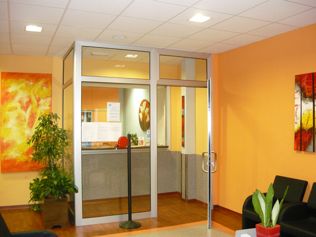
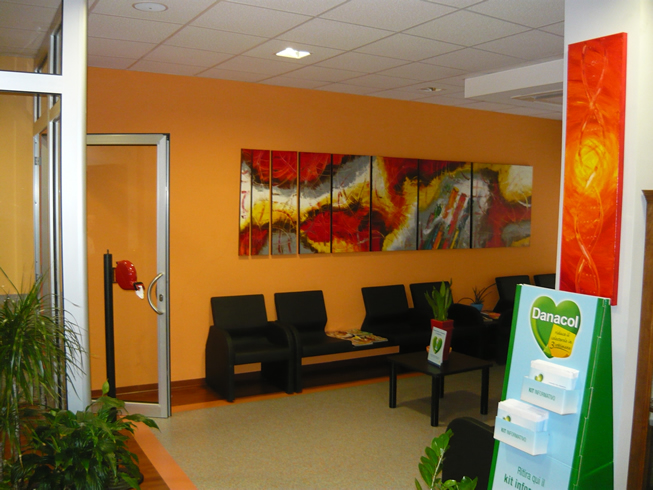
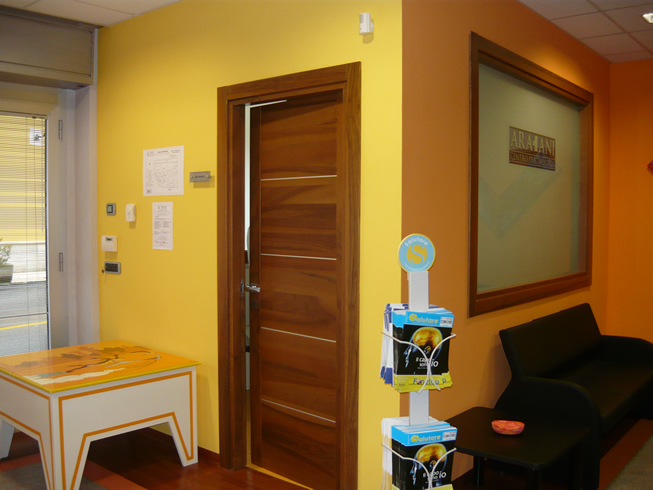

Laboratorio analisi cliniche ad Ariano Irpino
Analisi del sangue, delle urine e oltre 300 esami di laboratorio, con referti in giornata per il 90% delle prestazioni. Esperienza dal 1952, tecnologie di ultima generazione e qualità certificata ISO 9001:2015.
- Con impegnativa SSN o privatamente
- Senza liste d'attesa
- Parcheggio coperto riservato

Tutto ciò che serve per i tuoi esami, in un unico centro
Dalla prenotazione al referto online: un percorso semplice, veloce e sicuro per te e per il tuo medico.
Analisi del sangue
Emocromo, glicemia, colesterolo, tiroide, fegato, reni, marcatori, ormoni, vitamine e molto altro.
ApprofondisciOltre 300 analisi
Chimica clinica, ematologia, coagulazione, microbiologia, sieroimmunologia, tossicologia.
Cerca un esamePacchetti prevenzione
Pacchetti base a costo inferiore al ticket e pacchetti completi senza impegnativa del medico.
Vedi i pacchettiPrenotazione online
Scegli in autonomia giorno e orario del prelievo e presentati puntuale: nessuna coda.
Come funzionaReferti online
Il 90% delle prestazioni è refertato nel giorno stesso del prelievo. Consultali da casa.
Accedi ai refertiPrelievi a domicilio
Infermieri disponibili per il prelievo a casa e la consegna dei campioni al laboratorio.
Scopri il servizioLe principali analisi
Approfondimenti sugli esami più richiesti: a cosa servono, come si eseguono e come prepararsi.
Test allergie ALEX2
Un solo prelievo per quasi 300 allergeni respiratori e alimentari, con diagnostica molecolare.
Scopri di piùIntolleranze alimentari
Dosaggio delle IgG verso pannelli di 40 o 90 alimenti.
Scopri di piùCeliachia
Anticorpi anti-transglutaminasi, endomisio e gliadina con un semplice prelievo.
Scopri di piùHelicobacter pylori
Ricerca nelle feci e Urea Breath Test per gastrite e ulcera.
Scopri di piùOmocisteina
Marcatore correlato a rischio cardiovascolare, diabete e gravidanza.
Scopri di piùArtrite reumatoide
Anticorpi anti-CCP per la diagnosi precoce, anche anni prima dei sintomi.
Scopri di piùCDT – abuso alcolico
Transferrina carboidrato carente, richiesta per patente e idoneità.
Scopri di piùEsami in gravidanza
Prestazioni per la gravidanza fisiologica esenti dal ticket.
Scopri di più

Oltre 70 anni di esperienza nelle analisi cliniche
Fondato nel 1952 dal Dott. Aldo Ciccone, medico patologo, il Centro era organizzato come un laboratorio generale di base. Nel tempo sono stati annessi i settori specializzati di Microbiologia e Sieroimmunologia, Chimica Clinica e Tossicologica, trasformandolo in un Centro Diagnostico.
Sebbene rivolto direttamente ai pazienti, si è sempre distinto in particolari studi epidemiologici sul diabete, la talassemia, i marcatori tumorali e specifiche patologie da microrganismi. Nel 1991 il Laboratorio è diventato Centro Diagnostico ARA IANI con il coinvolgimento di altri professionisti. Oggi è diretto dal Dott. Ennio Romano, biologo specialista in patologia generale.
- Accreditato con la Regione Campania e la ASL Avellino per la Patologia Clinica
- Esami di 1°, 2° e 3° livello diagnostico
- Sistema qualità certificato UNI EN ISO 9001:2015
- Strumentazione Roche, Sysmex, bioMérieux, Sebia, Cepheid
Tre livelli di controllo su ogni analisi
Abbiamo come obiettivo primario il conseguimento di una qualità ottimale del servizio, adeguando costantemente la nostra organizzazione ai reali bisogni degli utenti. Per questo siamo dotati di un sistema di qualità rispondente alla norma UNI EN ISO 9001:2015.
- Idoneità del campione – il primo controllo si effettua prima dei dosaggi analitici per verificare l'idoneità del campione in esame.
- Controllo di Qualità Interno (CQI) – i dati vengono confrontati con campioni di riferimento a parametri noti, per verificare precisione e accuratezza dei test.
- Valutazione Esterna di Qualità (VEQ) – campioni di riferimento a titolo ignoto, confrontati con altri laboratori.
La validazione del referto viene effettuata dal Direttore Responsabile sulla base della congruità dei dati clinici, nel contesto generale di tutti i parametri. Il Laboratorio applica un sistema di qualità costantemente teso al miglioramento di tutte le attività connesse con la qualità del servizio.
I nostri standard di qualità24 h
esami di routine, emocromo e coagulazione
10 minuti
attesa media per il prelievo
0 reclami
ricevuti nell'ultimo anno solare
26.906
pazienti serviti nel 2023
Vieni a trovarci ad Ariano Irpino
—
- Lunedì – Venerdì7:30 – 14:00 · 15:30 – 18:30
- Sabato7:30 – 13:00
- Domenicachiuso
- Prenotazioni telefoniche11:00 – 13:00 e 16:00 – 18:00
Via V. Vitale 59/D, 83031 Ariano Irpino (AV)
Facilmente raggiungibile con i mezzi pubblici urbani ed extraurbani (capolinea a 50 metri). Parcheggio coperto riservato agli utenti.
La mappa di Google viene caricata solo su tua richiesta.
Il laboratorio di riferimento per l'Irpinia e la Valle dell'Ufita
Pazienti da tutta la provincia di Avellino scelgono il Centro Ara Iani. Trova le informazioni per il tuo comune:
Hai dubbi prima del prelievo?
Serve la prenotazione per fare le analisi del sangue?
Devo essere a digiuno?
Quando sono pronti i referti?
Posso fare gli esami con la ricetta del medico (SSN)?
Prenota il tuo prelievo in 1 minuto
Scegli giorno e orario online. Se hai difficoltà, chiamaci 11:00 – 13:00 e 16:00 – 18:00.